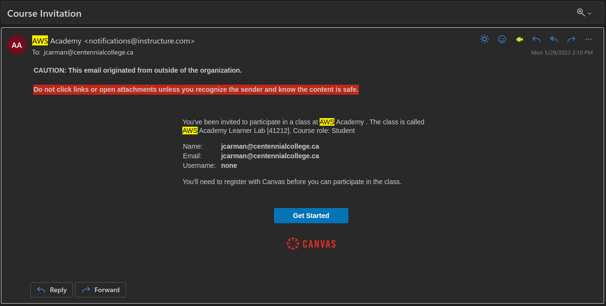

Lab 1 - Introduction to Amazon Web Services (AWS)
Overview
This week's lab will cover the following:
- Investigating the AWS Learner Lab.
- Using the AWS Console interface.
- Modifying Virtual Private Cloud (VPC) Security Groups.
- Exploring Amazon Elastic Cloud Compute (EC2).
- Adding an instance in AWS.
- Creating SSH key pairs & paired key encryption.
Lecture Slides
Investigating the AWS Learner Lab
You should have received an email (in your Centennial College email) from your professor inviting you to participate in the AWS Academy Learner Lab. If you have received and accepted this invitation you may proceed with this lab. If you have not received this invitation you should contact your professor immediately. You may continue with the rest of the lab once you have received the invitation. Here is a sample email.
The AWS Learner Lab provides a sandbox environment where you can build, configure and deploy AWS assets such as instances. There are some limitations as to what you can do, however it provides all the functionality we require for this course. In the first 3 labs you will be learning how to build an Apache Web Server in AWS. You will use this Apache Web Server to publish your web pages on in Labs 4-10. You are limited to $100 credit at no cost within the learner lab. Once this runs out your learner lab will be disabled. Additionally, there is no way to add funds to this pool. If you follow the lab instructions properly you should not have any issues.
Once you have accepted your invitation and logged into the AWS Learner Lab navigate to Courses (on the left hand side) > Modules > Learner Lab. You should see a screen that looks like the following:

Some important things to note on this screen:
- Start Lab
- Starts the Learner Lab environment.
- Stop Lab
- Stops the Learner Lab environment.
- Used $0 of $100
- Shows the balance used of your $100 credit. If this hits $100 of $100 used, your learner lab is disabled. Be careful.
- AWS with a red dot next to it
- Once your lab has started, this will turn green. You can then click on this to open the environment.
Using the AWS Console interface
Start your session in the Learner Lab by clicking on the Start Lab button. Once the red dot has turned green, click on it to enter the Learner Lab. This will take you to the AWS Console (depicted below), which will be where you will do most of your work. It also mirrors a production AWS interface. Note: Your screen may not look 100% identical to the one depicted, but should be mostly the same.

If you click on Services in the top left corner (beside the AWS logo), you will see all the services you can configure in the AWS learner lab. Common ones we will use are EC2 and VPC. You can search for these in the search bar, or browse the categories. Recently visited services will show up under the heading Recently visited. If you hover over any service you will see a greyed out star to the left of the name. You can click on this to add it to your favourites for easy access.
Modifying VPC Security Groups
An Amazon Virtual Private Cloud (VPC) is a dedicated virtual network within AWS' public cloud. It work similar to how a traditional network does in a data center. w3schools has some additional information. To access the VPC settings, click on Services (top left corner beside the AWS icon), and navigate to:
- Networking & Content Delivery > VPC.
- Click on VPC.
- Click on Security Groups.
Your screen should look like the following:
Click on InBound rules > Edit InBound Rules and add the following rule:
- Port Range: 22
- The box beside the magnifying glass: 0.0.0.0/0
This will allow incoming SSH connections from anywhere. We will use this in the next part to connect to your instance. The screenshot below shows what your inbound rules should look like:
Exploring Amazon Elastic Cloud Compute (EC2)
EC2 is where you will end up spending the most amount of time configuring things in this course. From here you can do things like launch instances, manage networking services and much more. To access EC2, click on Services (top left corner beside the AWS icon), and navigate to Compute > EC2. You may wish to add this to your favourites for easy access by hovering over and clicking the star. Your initial screen should look something like the following. w3schools has some additional information.

Adding an instance in AWS
Click on Launch instance just below the Resources pane. From the Launch an instance screen, select the following options:
- Name: First
- OS: Ubuntu
- Amazon Machine Image (AMI): Make sure Ubuntu Sever 22.04 is selected
Creating SSH key pairs & using public key cryptography
Under Key pair (login) click Create new key pair. Give it the name cnet204, accept the rest of the defaults and click "Create key pair".
Important: Do not lose your key pair or you will be unable to connect to your instance using SSH.Under Network settings click Select existing security group. Click the dropdown and check the default. Click Launch instance. Once it has finished completing (you should see a success message), click Connect to instance.
Note there are a few ways to connect to your instance from here. The two easiest to use are:
- EC2 Instance Connect: Allows you to connect to your instance from within your web browser.
- SSH client: Allows you to connect to your instance using the SSH key pair.
You will be accessing our new Linux VM remotely using SSH, which is a command-line (CLI) only protocol. You will be learning some Linux command line basics in Lab 2.
Requirements: An SSH Client
- Windows: Use the built-in Command Prompt application.
- macOS/Linux: Use the built-in Terminal application.
For all clients:
- In the Linux EC2 Instance summary page, click the Connect button.
- In the new Connect to instance page, click on the SSH client tab.
- Copy the example command near the bottom of the page. (Use your example command)
- Choose the proper OS below and continue.
On Windows, Using Command Prompt:
- Open Command Prompt.
- Change directories to your default Downloads folder with the following command: cd Downloads (If you saved your .pem file elsewhere, navigate there. Or move the .pem file into Downloads.)
- Paste the example command from the Connect to instance page, and press Enter.
- The SSH command will ask you to confirm connecting. Type yes and press Enter.
- If login is successful, you should see a prompt like this: ubuntu@ip-172-31-91-76:~$
- To quit, type exit.
On macOS/Linux, Using Terminal:
- Open Terminal.
- Change directories to your default Downloads folder with the following command: cd Downloads (If you saved your .pem file elsewhere, navigate there. Or move the .pem file into Downloads.)
- Change the file permissions of your .pem file with this command: chmod 400 *.pem
- Paste the example command from the Connect to instance page, and press Enter.
- The SSH command will ask you to confirm connecting. Type yes and press Enter.
- If login is successful, you should see a prompt like this: ubuntu@ip-172-31-91-76:~$
Completing the Lab
Take a screenshot of your successful connection and submit that to the dropbox on eCentennial for proof of completion. The following Exploration Questions are for furthering your knowledge only, and may appear on quizzes or tests at any time later in this course.
Exploration Questions
- How do you start/stop the AWS learner lab?
- How do you enter the AWS learner lab once you have started it?
- What happens to your learner lab if your credits hit $100 of $100 used?
- Where do you go to edit networking configuration options such as security groups?
- Where do you go to launch an instance?
- What is an instance?
- What command do you use to access an instance in AWS from your command line?
- What is public-key cryptography?